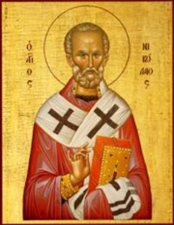

Nicholas is Chosen Bishop
Part 1
After this vision a few days passed and Archbishop
John of Myra died. All the bishops in the region gathered in Myra in order to
choose a worthy one to succeed him. Many respected and prudent men were
nominated as successors, but consensus couldn’t be reached, no matter who was
suggested.
According to the Vita
Per Metaphrasten by St. Simeon Metaphrastes,
“After the incumbent bishop of Myra had in a single
instant yielded up both his see and his life and had set out on the path to
God, a holy desire suffused all the bishops and the most eminent clergy subject
to him to discover the one man most worthy to be appointed to that charge. When
all of them had assembled in the church, one urged that the matter be entrusted
in prayer to the will and wisdom of God. All concurred as warmly as if each had
presented the idea himself. Then God, Who fulfills the desire of those fearing
Him and hears their prayers, revealed to one of them who would lead the church
in the future, for in due course He appeared to him in a holy vision enjoining
him to go stand at the entrance of the temple, there to greet the first man to
enter. That man would be the one who was inspired to his action by His own
Divine Spirit. Then the clergy should receive him [his name would be Nicholas]
and ordain him bishop, as the one predestined for the post. When the holy man
had experienced the mysterious vision, he communicated it to the clergy and
synod.
“While all the rest devoutly prayed, he to whom this
great revelation had been vouchsafed went to the stipulated place. At about the
hour of Matins our estimable Nicholas, impelled by the Holy Spirit, came to the
church. In its vestibule the man deemed worthy of the vision received him. ‘What
do people call you, my son?’ he earnestly inquired. ‘Nicholas the sinner,’ he
simply and unaffectedly answered, ‘and I am the servant of Your Sanctity.’
“At these humble and courteous words of our
exemplary man, to be sure partly because of the name of Nicholas which had been
foretold when it appeared, but partly also because of the extraordinary,
unmistakable modesty [for the holy man knew the saying, ‘Whom does God look to
here below, except the meek and the peaceable?’], he knew that this was the man
whom God was signifying.
“At that, joy suffused him, just as if he had
stumbled on some precious treasure. He thought of this disclosure as pure
wealth. ‘Follow me, son,’ he directed. Taking him by the hand, he led him to
the bishops, who recognized at once what had already been foretold to them by
their colleague. They, too, filled with holy joy, recognized that the virtue of
the man was in accord with the will of God.
“Then they immediately conducted the Saint to the
sanctuary of the temple. When news of this affair had spread about [for it is
natural for news to circulate in such important matters and to employ swift
wings], uncounted masses poured in the church. In a loud voice the bishops
proclaimed: ‘Accept, our sons, this man as your shepherd, whom the Holy Spirit
has anointed for you and to whom he has submitted your souls for guidance and
instruction. He has been made our leader not by human but by divine
determination. He whom we have been longing for we have: whom we were seeking
for, now we receive. As long as we may truly be shepherded and protected by
him, we need not lack hope that in the day of the Coming and the Revelation we
may stand firm as a people beloved of God.’
“To these words the people added their own
expression of gratitude, and addressed God those jubilees which cannot be
expressed in words. Then the holy synod of bishops together with the clergy, at
once invested him with what belonged to the office by law and what by custom.
They appointed him pontiff, though he was slow and hesitant to accept that pontifical
honor. Because of a truly praiseworthy sense of constraint, he could hardly
ascend the bishop’s throne to assume the prefecture and presidency of Myra, the
proper dissemination of the Word of Truth and Piety adherence to orthodoxy, and
the right teaching of it.”
The account in The Golden Legend is quite similar:
“After this the bishop of Mirea died and other
bishops assembled for to purvey to this church a bishop. And there was, among
the others, a bishop of great authority, and all the election was in him. And
when he had warned all for to be in fastings and in prayers, this bishop heard that
night a voice which said to him that, at the hour of matins, he should take
heed to the doors of the church, and him that should come first to the church
and have the name of Nicholas they should sacre him bishop. And he showed this
to the other bishops and admonished them for to be all in prayers; and he kept
the doors. And this was a marvellous thing, for at the hour of matins, like as
he had been sent form God, Nicholas arose tofore all other. And the bishop took
him when he was come and demanded of him his name. And he, which was simple as
a dove, inclined his head, and said: ‘I have to name Nicholas.’ then the bishop
said to him: ‘Nicholas, servant and friend of God, for your holiness ye shall
be bishop of this place.’ And sith they brought him to the church, howbeit that
he refused it strongly, yet they set him in the chair. And he followed, as he
did tofore in all things, in humility and honesty of manners. He woke in prayer
and made his body lean, he eschewed company of woman, he was humble in receiving
all things, profitable in speaking, joyous in admonishing, and cruel in
correcting.” (Jacobus de Voragine, “The
Golden Legend: Lives of the Saints,” translated by William Caxton, pp. 63-64)
By this means the Church received a bright lamp which did
not remain under a bushel, but was set in the pastoral place proper to him.

Thought to Ponder: St.
Nicholas is referred to as a bright lamp that doesn’t remain under a bushel.
Let’s pause for a moment and consider the light of his life, and the Light of
the World – Jesus Christ. Ephrem the Syrian wrote about Him, “The star of light
that shone forth suddenly beyond its nature is smaller than the sun yet greater
than the sun; it was smaller in visible light; it was greater in hidden power
because of its symbol. The morning star shed its rays among the dark ones and
led them like blind men. They came and received a great light. They gave
offerings and received life and worshipped and returned.” (Ephrem the Syrian, Hymns,
Hymn 6:7-8)
Thought to Discuss around the Dinner Table: What does God want us to do
with our lives? Have we ever asked Him?
When people look at us, what image (icon) do they
see in our lives? Is it the image of Christ or of some worldly hero?
Jesus said Himself, “’You are the light of the
world. A city that is set on a hill cannot be hidden. Nor do they light a lamp
and put it under a basket, but on a lampstand, and it gives light to all who
are in the house. Let your light so shine before men, that they may see your
good works and glorify your Father in heaven.’” (Matthew 5:14-16 NKJV)
Day by day, how can we let His light shine before
our friends, neighbors and co-workers so that they’ll glorify our Father in
Heaven?
Nicholas is Chosen Bishop
Part 1